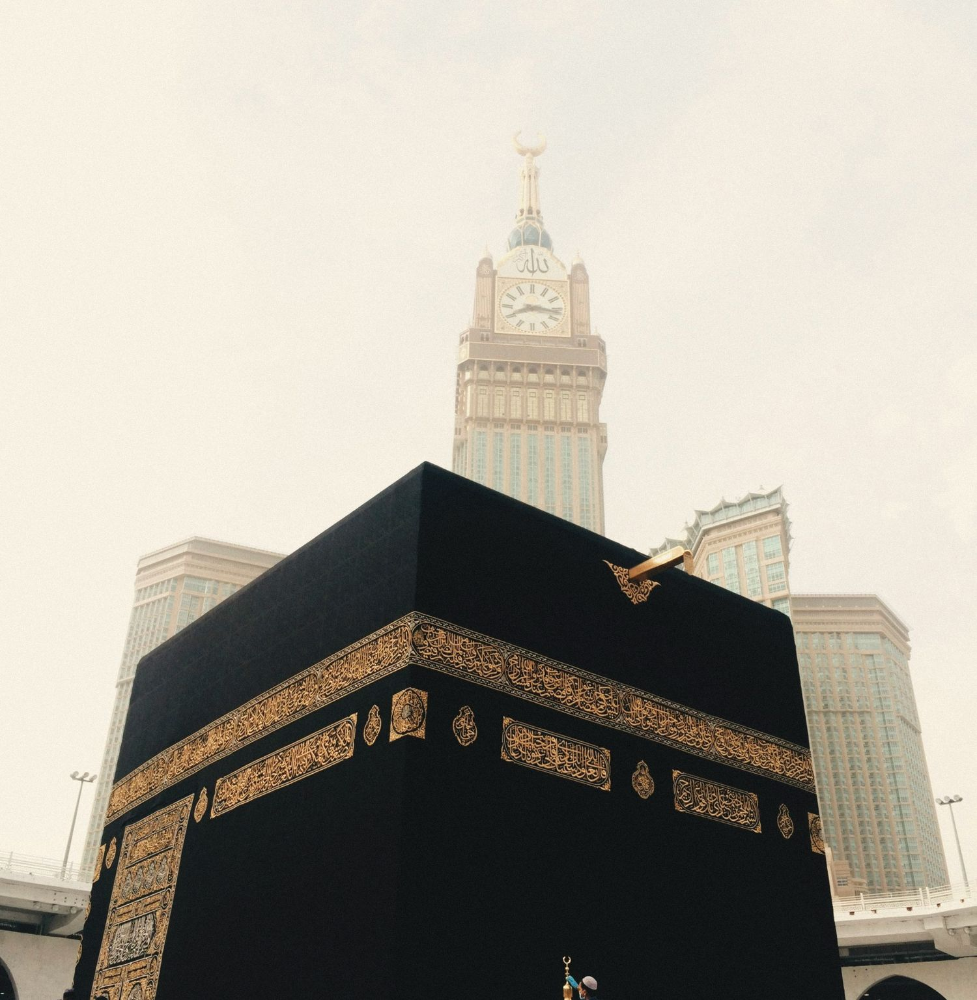

Harem'e giriş
Mescid-i Haram'a sağ ayakla, dua ederek girilir. Kâbe'yi ilk gördüğünüz an duaların kabul olunduğu anlardandır.
Niyetten dönüşe kadar umrenin her adımı, sırasıyla ve fotoğraflarla. İstanbul Hac Umre Hediyelik'in hazırladığı yolculuk rehberi.
Bismillahirrahmanirrahim
Yolculuğumuza hazırlıkla başlıyoruz.Rehberimizi Diyanet'in umre programındaki sıraya göre hazırladık. Çoğu kafile önce Medine'ye uğrar, ihrama Medine'den Mekke'ye giderken mîkatta girilir. Her durakta o adımın nasıl yapıldığını ve yanınızda ne olması gerektiğini bulacaksınız.
Umre bavulla değil, gönülle başlar. Yola çıkmadan önce kul hakkını gözetmek, borçları ödemek ya da ödeme yolunu belirlemek ve yakınlarla helalleşmek, rehberimizin ilk tavsiyesidir.
Niyetinizi yalnızca Allah rızası için tazeleyin. Gideceğiniz yerlerin tarihini ve umrenin nasıl yapılacağını önceden okumak, oradaki her anı daha bilinçli yaşamanızı sağlar.
Pasaport, vize ve aşı işlemlerini kafilenizle birlikte erkenden tamamlayın. İhram ve tavaf terliği gibi eşyaları yola çıkmadan önce deneyin. İlk kez giyilen terlik, tavafın ortasında can yakabilir.
Bavulunuzu hazırlarken hazır olanları işaretleyin. Listeniz bu cihazda saklanır.
Elinizdekileri kullanabilir, eksiklerinizi dilediğiniz yerden temin edebilirsiniz. Dilerseniz mağazamızdan da tamamlayabilirsiniz.
Havalimanında kafilenizle buluşun. Uçak, kafilenin programına göre Medine'ye ya da Cidde'ye iner.
Uçakta vakit geldiğinde namazınızı kılın, bol bol dua edin. Medine'ye ilk varan kafileler ihrama henüz girmez. İhram, Mekke yolundaki mîkatta giyilir.
Peygamber Efendimiz'in şehri. Rehberimiz, Medine'de ilk iş olarak abdestli ve temiz kıyafetlerle Mescid-i Nebevî'ye gidip Efendimiz'e selam vermeyi tavsiye eder.
Mescid-i Nebevî'ye sağ ayakla girilir, iki rekât tahiyyetü'l-mescid kılınır. Ardından edeple Hücre-i Saadet'in önüne gelinir; Efendimiz'e, sonra Hz. Ebû Bekir'e ve Hz. Ömer'e selam verilir.
Minber ile Hücre-i Saadet arası, hadiste "cennet bahçelerinden bir bahçe" olarak anılır. Kalabalıkta başkasını incitmeden, sırasını bekleyerek namaz kılmaya ve dua etmeye çalışın.
Kuba Mescidi'nde iki rekât namaz kılmak sünnettir. Uhud'da Hz. Hamza ve şehitler, Cennetü'l-Bakî'de ise sahabeler ziyaret edilir.
Efendimiz'in sevdiği, iftarda tercih ettiği meyve. Medine hurmaları en çok getirilen hediyedir.
Acve'den Sugay'a, her çeşidin kendine has tadı ve dokusu var.
Medine'nin en bilinen hurması. Koyu renkli, yumuşak ve hafif tatlı.
İri, koyu ve etli. Günlük tüketim için sevilen bir çeşit.
İki renkli kabuğu ve kıtır dokusuyla tanınır, daha az tatlıdır.
Uzun ve ince yapılı, sıkı dokulu bir çeşit.
Koyu kahverengi, orta boy ve dengeli tatlılıkta.
Açık renkli, yumuşak ve bal gibi tatlı; Kasım bölgesinin meşhur çeşidi.
Mîkat, ihramsız geçilmemesi gereken sınırdır. Medine'den Mekke'ye giden umreciler ihrama, Medine'ye yakın Zülhuleyfe'de (bugünkü adıyla Âbâr-ı Ali) girer.
Saç, sakal ve tırnaklar düzeltilir, gusül ya da abdest alınır.
Erkekler dikişsiz iki parça ihram örtüsüne bürünür. Kadınlar normal tesettür kıyafetleriyle kalır.
Kerahet vakti değilse ihram namazı kılınır.
"Allah'ım, senin rızan için umre yapmak istiyorum, bana kolaylaştır ve kabul eyle."
Niyetin ardından telbiye söylenir ve ihram başlamış olur.
Lebbeyk Allâhümme lebbeyk, lebbeyke lâ şerîke leke lebbeyk, inne'l-hamde ve'n-ni'mete leke ve'l-mülk, lâ şerîke lek.
Buyur Allah'ım, buyur! Buyur, senin hiçbir ortağın yoktur, buyur! Hamd sana, nimet senin, mülk de senindir. Senin hiçbir ortağın yoktur.
Zengin ile fakiri, makam ile sıradanı aynı kılan elbise.
İhramlı olan kişi, telbiye söyleyerek yoluna devam eder.
Üçü de aynı ihramdır, fark yalnızca kumaştadır. Kartlara dokunarak farkı okuyun.
İhrama girdikten sonra, ihramdan çıkana kadar sakınılan başlıca davranışlar.


Mescid-i Haram'a sağ ayakla, dua ederek girilir. Kâbe'yi ilk gördüğünüz an duaların kabul olunduğu anlardandır.
Tavaf, Hacerü'l-Esved hizasından başlar. Kâbe sol tarafta kalacak şekilde yedi kez dönülür; her dönüşe şavt denir.
Her şavtın başında Hacerü'l-Esved'e el ile işaret edilerek "Bismillâhi Allâhu ekber" denir. Kalabalıkta taşa ulaşmaya çalışıp kimseyi incitmeyin.
Kâbe kapısı ile Hacerü'l-Esved arası. Tavafın ardından imkân olursa burada dua edilir.
Tavaf bitince, mümkünse Makam-ı İbrahim'in arkasında, değilse Harem'in uygun bir yerinde iki rekât tavaf namazı kılınır. Ardından zemzem içilir.
Zemzem, kıbleye dönülerek ve besmele çekilerek, üç nefeste içilir. Hadiste "zemzem, ne niyetle içilirse onun içindir" buyrulur; içerken dua edin.
Hz. Hacer'in, oğlu İsmail için su ararken Safa ile Merve arasında koşuşunun hatırası. Sa'y Safa'da başlar, yedi şavtın sonunda Merve'de biter.
Yeşil ışıklı bölümde erkekler hafifçe koşar adım yürür. Buna hervele denir.
Safa tepesinde Kâbe'ye dönülür, eller kaldırılarak tekbir getirilir ve dua edilir.
Merve'de de Safa'daki gibi Kâbe'ye dönülerek dua edilir.
Sa'y için abdest şart değildir ama abdestli olmak daha faziletlidir.
Yorulursanız durup dinlenebilirsiniz. Tekerlekli sandalye için ayrı yollar vardır.
Dilediğiniz duayı, kendi dilinizde edebilirsiniz.
Şavtları zikirmatik ya da tesbihle saymak işinizi kolaylaştırır.
Sa'y Merve'de tamamlanır.
Yedinci şavtın sonunda dua edip sa'yi bitirin. Sırada ihramdan çıkış var.
Sa'yin ardından erkekler saçlarını kazıtır ya da kısaltır; kazıtmak daha faziletlidir. Kadınlar saçlarının ucundan bir miktar keser. Böylece ihramdan çıkılır ve umre tamamlanmış olur.
Artık ihram yasakları sona erer. Kalan günler Harem'de namaz, tavaf ve ziyaretlerle geçer.

Rehberimizin önerdiği yakın ve uzak ziyaretler.
İlk vahyin geldiği Hira mağarasının bulunduğu dağ.
Hicret sırasında Efendimiz ile Hz. Ebû Bekir'in üç gün saklandığı mağara.
Haccın en önemli rüknü olan vakfenin yapıldığı yer ve Cebel-i Rahme.
Hz. Hatice validemizin de medfun olduğu Mekke kabristanı.
Mekke'de iken yeniden umre yapmak isteyenlerin ihrama girdiği yerler.
Mekke'den ayrılmadan önce bir veda tavafı yapmak güzel olur. Eve dönen, yanında bereketi de getirir: bir avuç hurma, bir şişe zemzem, sevdiklerine bir tesbih.
Acve, Safavi, Sugay, Mebrum ve daha fazlası
Zemzem ve sunum takımları
Kehribar, doğal taş, kuka ve ahşap
Şönil, kadife, Ravza desenli ve cep seccadeleri
Buhara esans serileri, misk ve kolonyalar
Hat tablolar, Kur'an-ı Kerim'ler ve rehber kitaplar